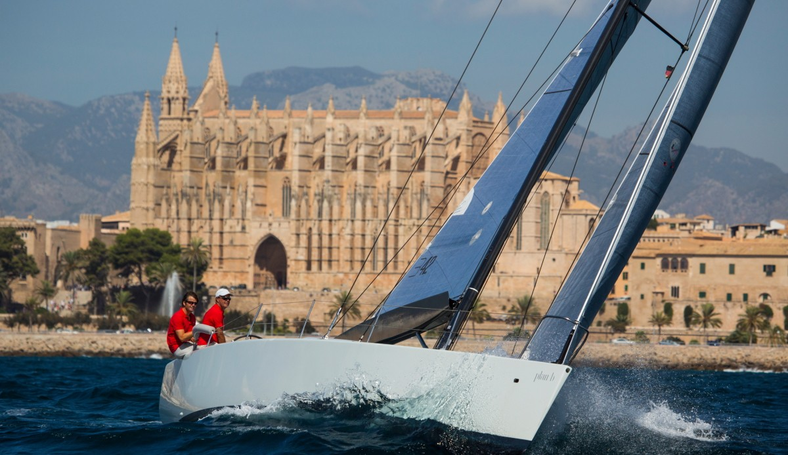

Explore the different sailing clubs and institutions the island offers that best suit your requirements.
.jpg)
The 55th Trofeo S.A.R. Princesa Sofía Mallorca is an internationally recognised and very well respected Olympic sailing regatta held annually in the Bay of Palma, Mallorca.
Established in 1968, the Trofeo S.A.R. Princesa Sofía Mallorca has always been a crucial event for the world’s best sailors.
With more than 1,100 sailors from 62 nations, the regatta will test new sailing formats that can define new competitive sailing standards across the world.
If you want to see one of the most important sailing events in the world, just turn up anywhere in the Bay of Palma to see the action! You do not need tickets to see the event!
See you there!
Image credit: © SAILING ENERGY

With around 550km of Mediterranean coastline and more than 300 days of sun, keeping thermal winds reliable, Mallorca is one of the top worldwide destinations for sailing.
It features around 30 sailing clubs with courses in multiple languages and holds internationally recognised and Olympic-level sailing events.
Image credit: © SPearce
Explore the different sailing clubs and institutions the island offers that best suit your requirements.